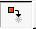
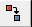
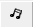
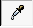

Animacija sadržaja slajda | |
| Nazad | OpenOffice.org Impress | Napred |
Animacija sadržaja vam pruža mogućnost da prikažete sadržaj slajda određenim redosledom i tako naglasite pojedine stavke.
Animaciju radite tako što prvo odaberete objekt koji želite da animirate i u padajućem meniju izaberete Slide Show / Effects ili kliknete na ikonicu Animation Effects na traci sa pomoćnim alatima.
Tada se otvara prozor u kojem možete izabrati efekt po želji.
U prozoru sa efektima podešavaju se četiri stvari.
Podešavanje efekata:
U padajućoj listi Effects odaberete kategoriju efekata i iz liste ispod odaberete efekt po želji.
U padajućoj listi u dnu prozora birate brzinu animacije. I potvrdite vaš izbor klikom na dugme .
Podešavanje tekst efekata koje dobijate klikom na dugme .
Kao i kod prethodnog podešavanja u padajućoj listi Effects birate kategoriju, a u listi ispod klikom na ikonu efekta birate sam efekt.
Treće podešavanje se odnosi na vidljivost odabranog objekta i zvuka koji prati odgovarajući efekt.
Postoje dve padajuće liste .
Prva se odnosi na vidljivost objekta i prate je dva dugmeta.
|  | Skriva odabrani objekt. |
|  | Prekriva odabrani objkat sa odabranom bojom. |
Druga se odnosi na zvuk koji prati animaciju i ima tri dugmeta.
|  | Iz padajuće liste birate zvuk animacije. |
| Ako je propratni zvuk duži od trajanja animacije odsviraće se do kraja. | |
| Otvara dijalog prozor i sami birate putanju do zvučnog zapisa koji želite da prati animaciju. |
Četvrto podešavanje se odnosi na redosled prikazivanja oblekata. Redosled prikazivanja uređujete prevlačenjem objekata u listi.
Ostala dugmad
|  Dugme | osvežava promene koje napravite. |
| Dugme | primenjuje promenu koju ste odabrali. |
 Dugme
Dugme
| prikaz slajda radi provere izgleda efekta. |
| Nazad | Kući | Napred |
| Multimedija | Gore | Tranzicija — Prelazni efekti |